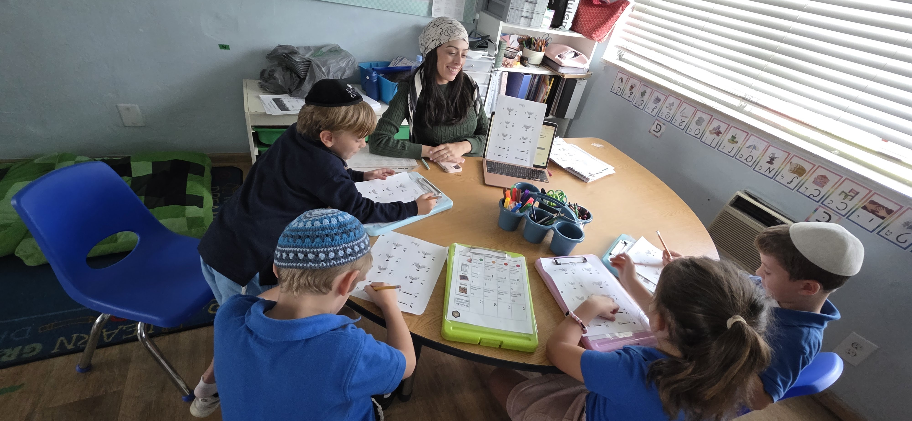
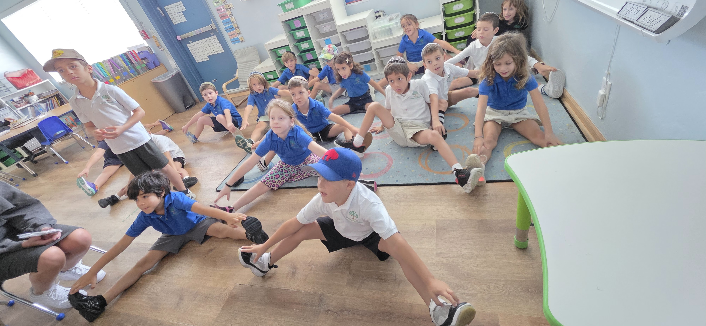
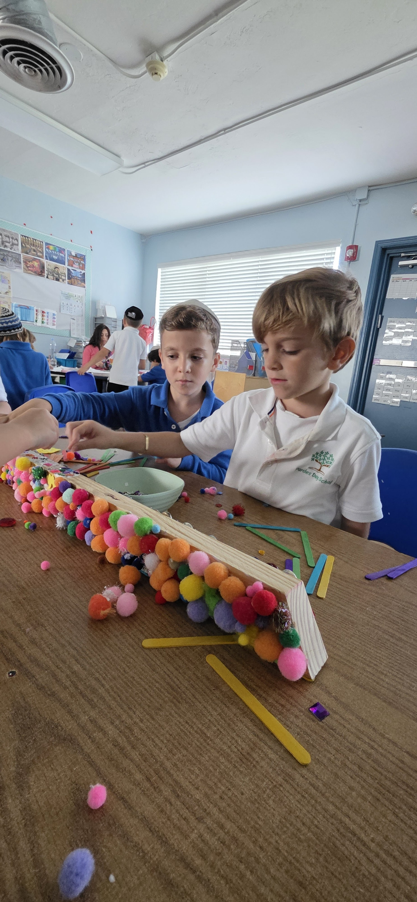

Multiple teachers. Every room.
11 to 20 students per class with 2+ teachers working simultaneously. Fluid instructional groups mean every child receives direct instruction at exactly the right level.
Kindergarten through 5th grade. Multiple teachers in every classroom, practice time built into the day, and a curriculum designed for mastery.
Every part of the elementary experience is intentional. Multiple teachers work simultaneously in every classroom. Students get direct instruction every day. And practice happens at school, not at the kitchen table.

Our English curriculum, designed by our Head of School, ensures students leave with a love for reading, the skills to write, and the ability to engage in conversation, all on a personal level.
Math instruction uses HMH Into Math, and we track growth with NWEA MAP Growth assessments. Afternoons bring those skills to life through science, social studies, and real-world projects.

We use Torah 4 Children for Kriah, Bright Beginnings and Lashon Hatorah for Chumash, and Bright Beginnings for Gemara. All instruction is guided by the JSAT standards from COJDS.
Students see how Torah wisdom, mitzvot, and tradition guide daily decisions, build relationships, and strengthen community.

Real-life skills are not a separate program at Pardes. They are embedded in how we teach, how we greet each other, and how we resolve challenges.
LeHashlim, our real-life skills curriculum, teaches collaboration, emotional management, and the skills the real world actually demands. Our teachers are skilled coaches who notice, model, and guide.
11 to 20 students per class with 2+ teachers working simultaneously. Fluid instructional groups mean every child receives direct instruction at exactly the right level.
Homework means reading review in both Hebrew and English. Practice, practice, practice. That is it. All other learning happens during the school day.
Starting in 3rd grade, students explore foundational technology, including age-appropriate AI literacy and Waggle mathematics.




Walk the classrooms.
Meet the teachers.
See how your child would spend a day here.